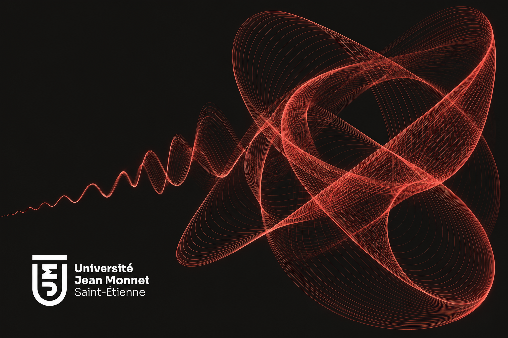

MASTER’S PROGRAM
Sound and
Music Technology.
Jean Monnet University · Saint-Étienne, France
Explore the curriculum →
Program description
The Sound and Music Technology (SMT) master’s program will be offered at Jean Monnet University (Saint-Étienne, France) starting in September 2027. In an AI-enabled world, SMT aims to prepare future audio software and hardware architects while developing a critical and creative perspective on the use of these technologies, rooted in the arts. SMT is a two-year program. Ninety percent of its courses are taught in English and ten percent in French.
The first year is dedicated to technical, theoretical, and practical courses. During the first semester of the second year, students work on a capstone project and can take specialization courses. The final semester is fully dedicated to a six-month internship. Each year, two festivals open to the public give students the opportunity to showcase their work.
Key concepts
- Strong engineering fundamentals
- Artistic and engineering creativity above all
- Strong focus on hardware
Partners
SMT is offered in collaboration with academic and cultural partners that provide different perspectives and facilities for sound and music technology.
- Inria Emeraude
The Inria Emeraude team specializes in research on embedded audio systems and the Faust programming language.
- Le Fil
A concert venue with recording studios and two concert halls.
- GRAME-CNCM
A center for music creation based in Lyon. It hosts a computer music research team and artist residencies and organizes festivals focused on new music.
Several SMT courses are shared with the Digital Creativity (DIGICREA), Bioacoustics, and Digital Set Design (SAN) master’s programs at Jean Monnet University, giving students from different backgrounds opportunities to collaborate.